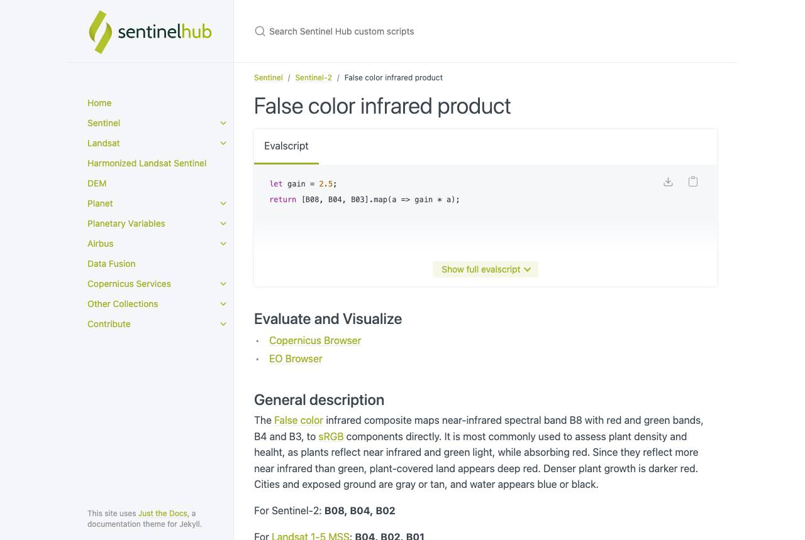
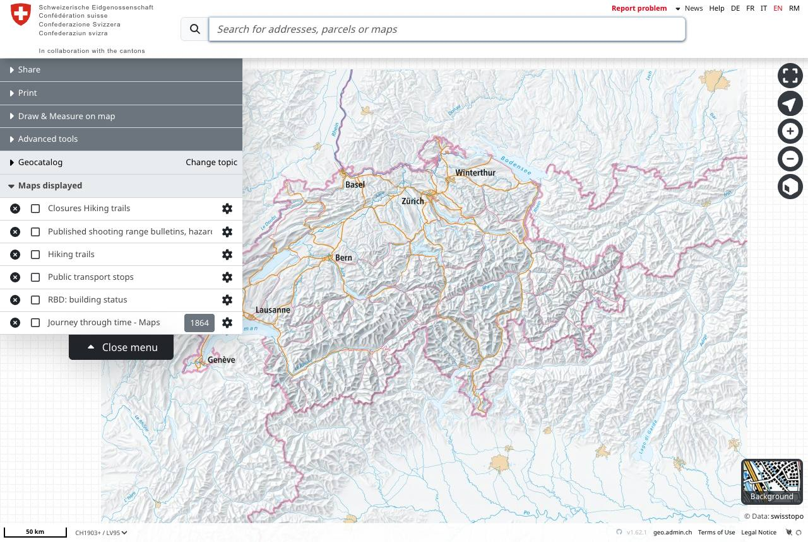
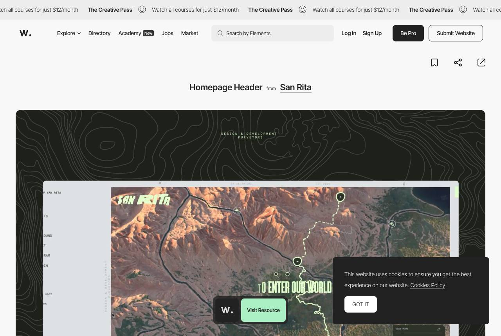
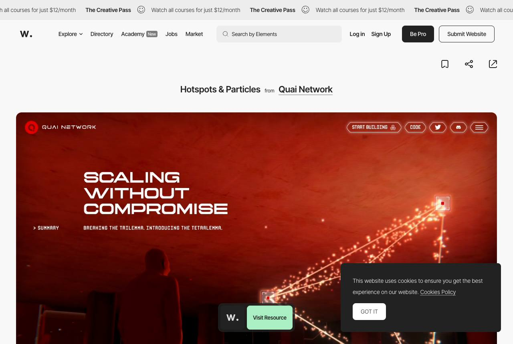
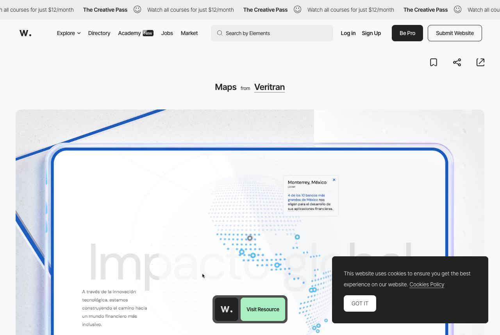
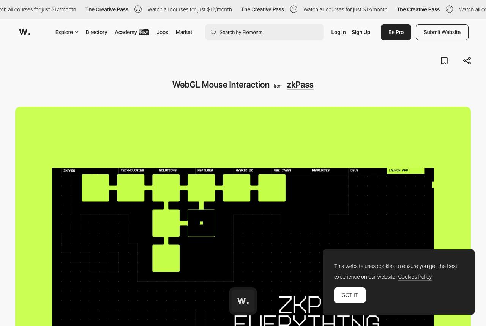

Award-level and reference sites: references

Sentinel Hub's script: 'return [2.5 * B08, 2.5 * B04, 2.5 * B03]'. Borrowed: the band recipe written on screen as the legend.
map.geo.admin.ch: a layer list with a transparency slider and an info button per layer. Borrowed: per-layer opacity shown as a short bar.
San Rita: one white route line with labelled waypoints over terrain. Borrowed: a single bright line carries the eye; everything else is quiet.
Dual Network: a monochrome red particle field. Borrowed: one hue for the whole cloud, colour reserved for the member.
Veritran: a dot-matrix map that reacts to the pointer. Borrowed: points that brighten near the finger.
zkPass: grid cells lighting under the pointer. Borrowed: the grid answers touch, immediately, without easing.